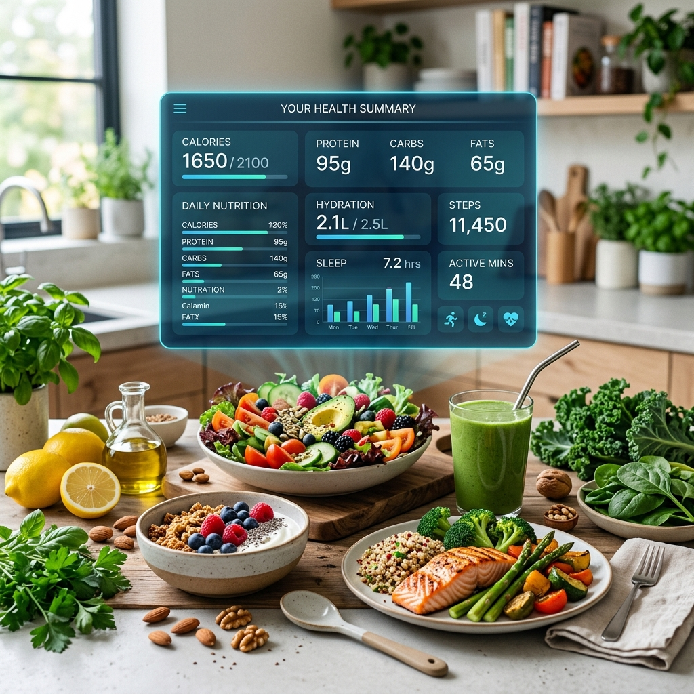

いい天気だな、出かけよう
彼の一番好きな朝。堤防に朝日が差す。体調は悪くない——まだ何も知らない。
膵臓がんは初期にほとんど症状がありません。PANCREASaver® 助胰見® 画像診断AIは、腫瘍が2cm未満のうちに見つけます——ご家族とともに最も貴重な治療のタイミングを守ります。
臨床導入と第三者検証
朝、検査、そして小さな丸——家族の明日は守られた。早期発見がすべてを変えます。
彼の一番好きな朝。堤防に朝日が差す。体調は悪くない——まだ何も知らない。
定期健診の腹部CTで、AIが1.2cmの腫瘍を丸で囲んだ——肉眼ではほぼ見えないほど小さい。
早く見つかったから、選択肢はまだ多い。家族はいつものように笑いながら食卓を囲んだ。
5つの駅をスクロール——PANCREASaver®が患者と医師と共に歩む道のりです。
膵臓がんの初期はほぼ無症状。違和感を感じた頃には、すでに初期ではないことが多い。ハイリスク層にとって定期画像検診だけが時間を取り戻す方法です。
腹部CTの後、AIが1.2cmの腫瘍を丸で囲む——2cm未満で感度92.1%。見えるものは、対処できます。
AIの所見は放射線科医が確認し、専門医が診断を確定します。AIは医師を置き換えず、より早く正確に見る手助けをします。
1cmの腫瘍と転移した腫瘍では道筋がまったく違います。早期発見は手術の選択肢を増やし、生存の可能性を高めます。
治療の後は定期経過観察。私たちが守るのは画像ではなく、一つの家庭——何気ない毎日こそ、守る価値があります。
PANCREASaver® の全体像を 6 つのテーマで — スワイプして探索。


感度 89.7%、特異度 92.8%；2cm 未満の早期腫瘍への感度 92.1% — Radiology と Lancet Digital Health に掲載。
臨床データを見る
Lancet Digital Health、Radiology、BMC Cancer など 5 編の実在論文：テーマ・抄録・PubMed リンク。
論文ライブラリへ
三つの入口、三つの旅。PANCREASaver®は健診テーブルから病床までをつなぐ一つのケアチェーンです。
累計読影300件超、臨床試験と一致する感度を確認。
医学センターから地域病院、そして健診センターへ——早期発見をより身近に。
台湾・米国で10件の特許、RSNA 2023マルグリス賞を台湾初受賞。
結果が出た日、医師は言った。「早く見つかってよかったですね。」
公式 LINE に参加：24 時間 AI 即時回答、膵臓にやさしい食事・生活習慣・予防のアドバイス。台湾大学膵臓センター、衛福部、国健署の厳選された健康教育資料に基づきます。
